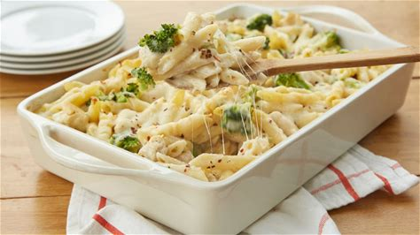

Chicken Alfredo Pasta

Discription
Chicken Alfredo Pasta is a classic Italian-American dish known for its creamy Alfredo sauce, tender chicken, and perfectly cooked pasta. It's a comforting and indulgent meal that's surprisingly easy to make at home.
Ingredients
- 8 oz fettuccine pasta
- 2 boneless, skinless chicken breasts
- 1 cup heavy cream
- 1/2 cup unsalted butter
- 1 cup grated Parmesan cheese
- Salt and pepper to taste
- Fresh parsley for garnish
Steps
- Cook the fettuccine pasta according to package instructions.
- Season chicken breasts with salt and pepper, then cook in a skillet until fully cooked. Slice into strips.
- In a saucepan, melt butter over medium heat. Add heavy cream and bring to a simmer.
- Stir in the grated Parmesan cheese until the sauce is smooth and creamy.
- Add the cooked pasta and chicken strips to the sauce, tossing to coat evenly.
- Garnish with fresh parsley and serve hot.